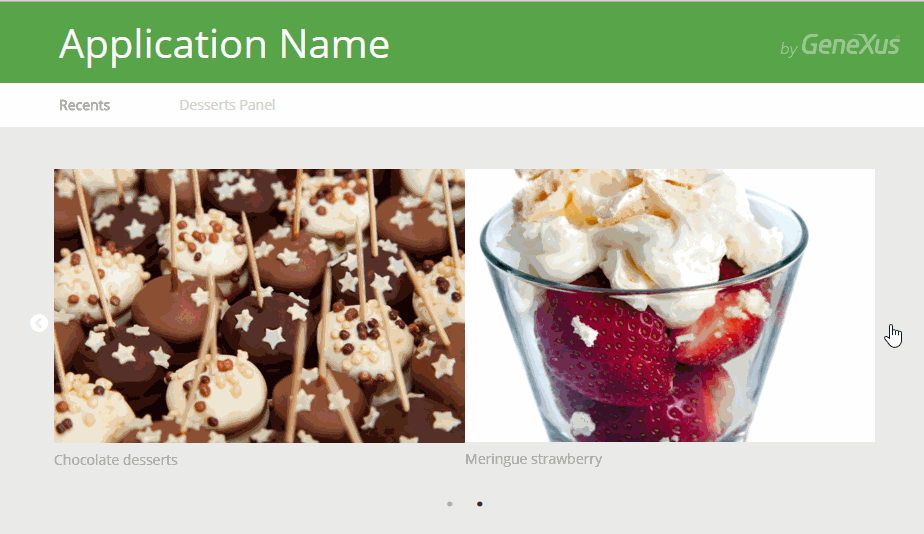

The Horizontal Grid control allows viewing the elements of a list in a different way than the traditional one. Basically, it has the following characteristics:
 ScopeGenerators: Android, Apple, Angular, .NET, .NET Core, Java. See AlsoHowTo: Using Horizontal Grid control
|
| Backlinks |
| Control Type property |
| HowTo: Using Horizontal Grid control in Web applications |